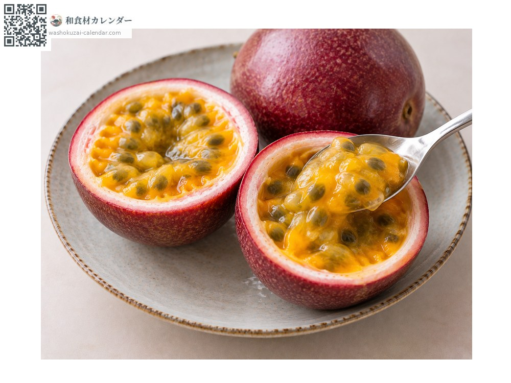
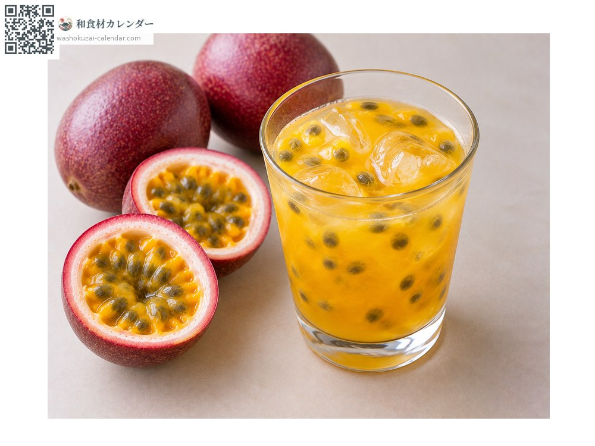
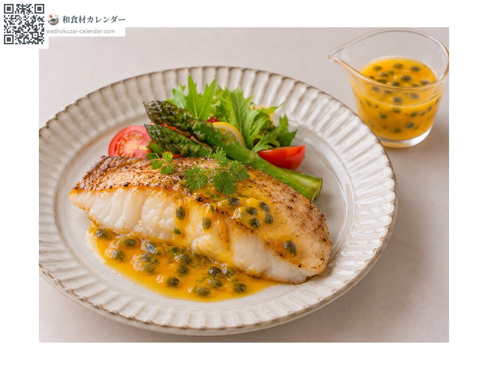

Fruit
Passion fruit
パッションフルーツ ぱっしょんふるーつ
Also known askudamonotokeiso, kudamonotokeisou
At its best in Jun, Jul, Aug

When it is at its best
Jan
Feb
Mar
Apr
May
Jun
Jul
Aug
Sep
Oct
Nov
Dec
In seasonAvailable
How to cook

Eaten fresh
Halved and eaten with a spoon, seeds and all.

Juice
The juice pressed out, marked by a strong acidity and aroma.

Sauce
For fish or meat, where the acidity sharpens the dish.
How to choose
Taut skin. It is ready to eat once wrinkles begin to appear.
Storage
Ripen at room temperature until wrinkled, then refrigerate.
Main areas
Good to know
Its Japanese name means clock-face fruit, because the flower resembles a clock dial. Passion here refers not to ardour but to the Passion of Christ, the flower having been seen as suggesting the cross.